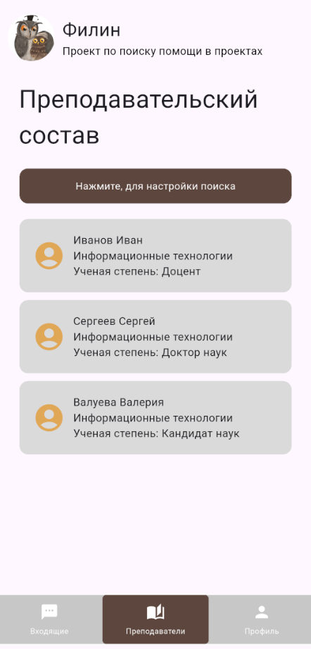
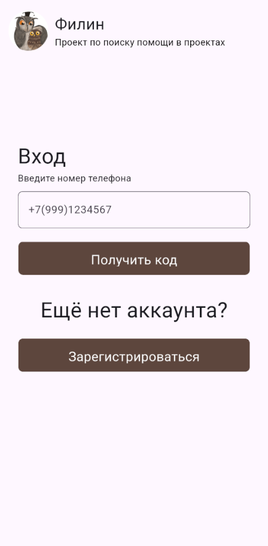
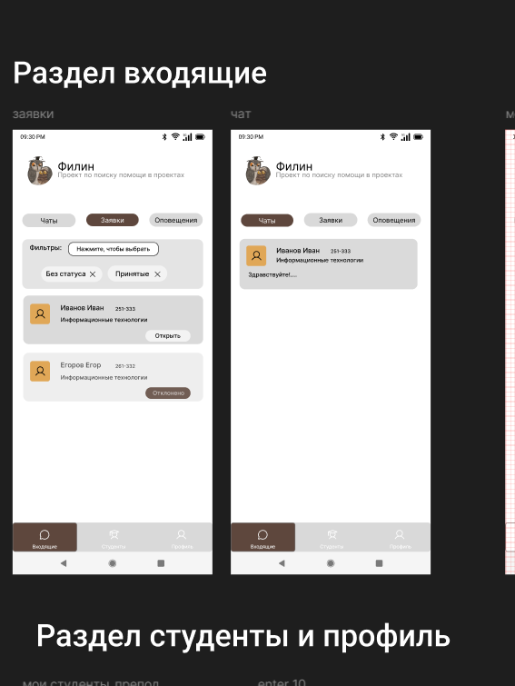
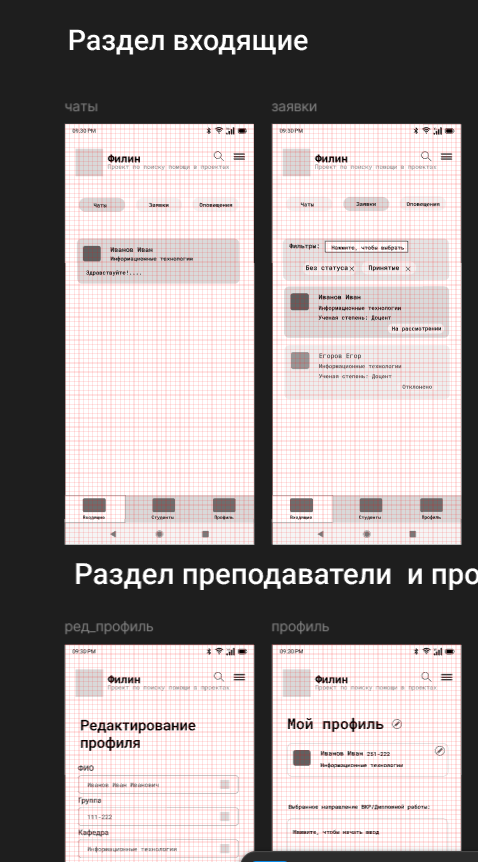

25 апреля, 2026
Продолжение активной разработки экранов
Продолжение разработки: добавили еще несколько критически важных экранов. Реализовали личный кабинет студента. Параллельно велась работа над личным кабинетом преподавателя. Также ведётся разработка над экранами отзывов
24 марта, 2026
Начало разработки (Flutter)
Разработка первых ключевых экранов на Flutter старт программирования: на фреймворке Flutter были сверстаны и «оживлены» основные экраны приложения. В первую очередь реализовали авторизацию (для студентов и преподавателей). Приложение уже обрело работающую навигацию между первыми вкладками.
14 марта, 2026
Создание полноценного дизайн-макета приложения
Опираясь на утвержденные WireFrames, мы перешли к визуальному наполнению. Был разработан чистый и функциональный дизайн. Основное внимание уделили карточкам профилей преподавателей (с указанием занятости и научных интересов), визуализации фильтров по факультетам и формату работы, а также понятному интерфейсу для системы отзывов и рейтинга. В результате мы получили интерактивный прототип, готовый к передаче в разработку.
7 марта, 2026